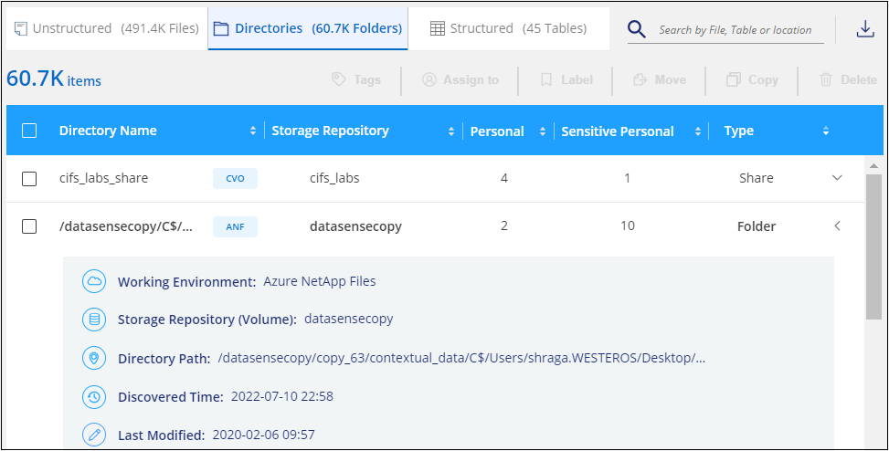
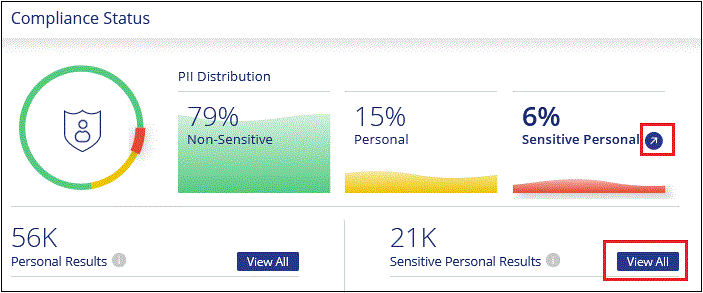

Demander de modifier un document
Demander de modifier un document Modifier sur GitHub
Modifier sur GitHub Guide des contributeurs
Guide des contributeursAffichage des détails de conformité concernant les données stockées dans votre organisation
Contributeurs
Prenez le contrôle de vos données privées en affichant les détails sur les données personnelles et les données personnelles sensibles de votre organisation. Vous pouvez également consulter les catégories et les types de fichiers que Cloud Data trouve dans vos données.

|
Les fonctionnalités décrites dans cette section ne sont disponibles que si vous avez choisi d’effectuer une analyse de classification complète sur vos sources de données. Les sources de données qui ont une analyse avec mappage uniquement n’affichent pas de détails au niveau des fichiers. |
Par défaut, le tableau de bord Cloud Data Sense affiche les données de conformité pour tous les environnements et bases de données de travail.

Si vous ne souhaitez voir des données que pour certains environnements de travail, Dashboard data for specific working environments,sélectionnez ces environnements de travail.
Vous pouvez également filtrer les résultats à partir de la page Data Investigation et télécharger un rapport des résultats sous forme de fichier CSV. Voir data in the Data Investigation page,Filtrage des données dans la page Data Investigation pour plus d’informations.
Affichage des fichiers contenant des données personnelles
Cloud Data Sense identifie automatiquement des mots, des chaînes et des motifs spécifiques (Regex) dans les données. Par exemple, les renseignements d’identification personnelle (RP), les numéros de carte de crédit, les numéros de sécurité sociale, les numéros de compte bancaire, les mots de passe, entre autres. "Voir la liste complète". Data Sense identifie ce type d’information dans des fichiers individuels, dans des fichiers dans des répertoires (partages et dossiers) et dans des tables de bases de données.
En outre, si vous avez ajouté un serveur de base de données à scanner, la fonction Data Fusion vous permet de numériser vos fichiers afin d’identifier si des identificateurs uniques de vos bases de données se trouvent dans ces fichiers ou d’autres bases de données. Voir "Ajout d’identifiants de données personnels à l’aide de Data Fusion" pour plus d’informations.
Pour certains types de données personnelles, Data Sense utilise la validation de proximité pour valider ses conclusions. La validation se produit en recherchant un ou plusieurs mots clés prédéfinis à proximité des données personnelles trouvées. Par exemple, Data Sense identifie un américain Numéro de sécurité sociale (SSN) comme numéro de sécurité sociale s’il y a un mot de proximité, par exemple, SSN ou social Security. "Le tableau des données personnelles" Indique quand Data SENSE utilise la validation de proximité.
-
Dans le menu de navigation de gauche BlueXP, cliquez sur gouvernance > classement, puis sur l’onglet conformité.
-
Pour examiner les détails de toutes les données personnelles, cliquez sur l’icône en regard du pourcentage de données personnelles.

-
Pour examiner les détails d’un type spécifique de données personnelles, cliquez sur Afficher tout, puis cliquez sur l’icône étudier les résultats pour un type spécifique de données personnelles, par exemple les adresses e-mail.

-
Examinez les données en recherchant, en triant, en développant les détails d’un fichier spécifique, en cliquant sur Informez Results pour afficher les informations masquées ou en téléchargeant la liste de fichiers.
Les 2 captures d’écran ci-dessous montrent les données personnelles trouvées dans des fichiers individuels et trouvées dans des fichiers dans des répertoires (partages et dossiers). Vous pouvez également sélectionner l’onglet Structured pour afficher les données personnelles contenues dans les bases de données.


Affichage des fichiers contenant des données personnelles sensibles
Cloud Data Sense identifie automatiquement des types spéciaux d’informations personnelles sensibles, comme définis par les réglementations en matière de confidentialité, telles que "Les articles 9 et 10 du RGPD". Par exemple, des renseignements concernant la santé d’une personne, son origine ethnique ou son orientation sexuelle. "Voir la liste complète". Data Sense identifie ce type d’information dans des fichiers individuels, dans des fichiers dans des répertoires (partages et dossiers) et dans des tables de bases de données.
Cloud Data Sense utilise l’intelligence artificielle (IA), le traitement du langage naturel (NLP), l’apprentissage machine (ML) et l’informatique cognitive (CC) pour comprendre la signification du contenu qu’il analyse afin d’extraire des entités et de le catégoriser en conséquence.
Par exemple, une catégorie de données sensibles du RGPD est l’origine ethnique. Du fait de ses capacités NLP, Data Sense peut distinguer une phrase qui lit « George est mexicain » (en indiquant des données sensibles comme indiqué à l’article 9 du RGPD), et « George mange de la nourriture mexicaine ».
|
|
Seul l’anglais est pris en charge lors de la recherche de données personnelles sensibles. La prise en charge d’autres langues sera ajoutée ultérieurement. |
-
Dans le menu de navigation de gauche BlueXP, cliquez sur gouvernance > classement, puis sur l’onglet conformité.
-
Pour examiner les détails de toutes les données personnelles sensibles, cliquez sur l’icône en regard du pourcentage de données personnelles sensibles.

-
Pour examiner les détails d’un type spécifique de données personnelles sensibles, cliquez sur Afficher tout, puis cliquez sur l’icône enquêter sur les résultats pour un type spécifique de données personnelles sensibles.

-
Examinez les données en recherchant, en triant, en développant les détails d’un fichier spécifique, en cliquant sur Informez Results pour afficher les informations masquées ou en téléchargeant la liste de fichiers.
Affichage des fichiers par catégories
Cloud Data SENSE répartit les données analysées et les divise en différents types de catégories. Les catégories sont des rubriques basées sur l’analyse par IA du contenu et des métadonnées de chaque fichier. "Voir la liste des catégories".
Les catégories peuvent vous aider à comprendre ce qui se passe avec vos données en vous montrant les types d’informations dont vous disposez. Par exemple, une catégorie comme les CV ou les contrats d’employés peut inclure des données sensibles. Lorsque vous étudiez les résultats, vous pouvez constater que les contrats d’employés sont stockés dans un emplacement non sécurisé. Vous pouvez ensuite corriger ce problème.
|
|
L’anglais, l’allemand et l’espagnol sont pris en charge pour les catégories. La prise en charge d’autres langues sera ajoutée ultérieurement. |
-
Dans le menu de navigation de gauche BlueXP, cliquez sur gouvernance > classement, puis sur l’onglet conformité.
-
Cliquez sur l’icône Inquiétude Results pour l’une des 4 catégories les plus importantes directement à partir de l’écran principal, ou cliquez sur Afficher tout, puis cliquez sur l’icône de l’une des catégories.

-
Examinez les données en recherchant, en triant, en développant les détails d’un fichier spécifique, en cliquant sur Informez Results pour afficher les informations masquées ou en téléchargeant la liste de fichiers.
Affichage des fichiers par type de fichier
Cloud Data SENSE affecte les données analysées et les divise par type de fichier. La vérification de vos types de fichiers peut vous aider à contrôler vos données sensibles car il se peut que certains types de fichiers ne soient pas stockés correctement. "Voir la liste des types de fichiers".
Par exemple, vous pouvez stocker des fichiers CAO qui contiennent des informations très sensibles sur votre organisation. S’ils ne sont pas sécurisés, vous pouvez prendre le contrôle des données sensibles en limitant les autorisations ou en déplaçant les fichiers vers un autre emplacement.
-
Dans le menu de navigation de gauche BlueXP, cliquez sur gouvernance > classement, puis sur l’onglet conformité.
-
Cliquez sur l’icône étudier les résultats pour l’un des 4 types de fichiers les plus importants directement à partir de l’écran principal ou cliquez sur Afficher tout, puis cliquez sur l’icône correspondant à l’un des types de fichiers.

-
Examinez les données en recherchant, en triant, en développant les détails d’un fichier spécifique, en cliquant sur Informez Results pour afficher les informations masquées ou en téléchargeant la liste de fichiers.
Affichage des métadonnées de fichier
Dans le volet Résultats de l’enquête de données, vous pouvez cliquer sur  pour afficher les métadonnées de fichier, quel qu’il soit.
pour afficher les métadonnées de fichier, quel qu’il soit.

En plus de vous indiquer l’environnement de travail et le volume où se trouve le fichier, les métadonnées affichent beaucoup plus d’informations, notamment les autorisations de fichier, le propriétaire du fichier, s’il existe des doublons de ce fichier et l’étiquette AIP attribuée (si vous disposez de "AIP intégré dans le cloud Data SENSE"). Ces informations sont utiles si vous prévoyez de le faire "Créer des règles" car vous pouvez voir toutes les informations que vous pouvez utiliser pour filtrer vos données.
Notez que toutes les informations ne sont pas disponibles pour toutes les sources de données, ce qui est juste ce qui est approprié pour cette source de données. Par exemple, le nom du volume, les autorisations et les libellés AIP ne sont pas pertinents pour les fichiers de base de données.
Lors de l’affichage des détails d’un seul fichier, vous pouvez effectuer quelques actions sur le fichier :
-
Vous pouvez déplacer ou copier le fichier dans n’importe quel partage NFS. Voir "Déplacement des fichiers source vers un partage NFS" et "Copie des fichiers source vers un partage NFS" pour plus d’informations.
-
Vous pouvez supprimer le fichier. Voir "Suppression des fichiers source" pour plus d’informations.
-
Vous pouvez affecter un certain état au fichier. Voir "Application de balises" pour plus d’informations.
-
Vous pouvez affecter le fichier à un utilisateur BlueXP pour être responsable de toutes les actions de suivi qui doivent être effectuées sur le fichier. Voir "Affectation d’utilisateurs à un fichier" pour plus d’informations.
-
Si vous avez intégré des étiquettes AIP avec Cloud Data SENSE, vous pouvez attribuer un libellé à ce fichier ou modifier un libellé différent si celui-ci existe déjà. Voir "Attribution manuelle d’étiquettes AIP" pour plus d’informations.
Affichage des autorisations pour les fichiers et les répertoires
Pour afficher la liste de tous les utilisateurs ou groupes qui ont accès à un fichier ou à un répertoire, ainsi que les types d’autorisations dont ils disposent, cliquez sur Afficher toutes les autorisations. Ce bouton est disponible uniquement pour les données des partages CIFS, SharePoint Online, SharePoint sur site et OneDrive.
Notez que si vous voyez des SID (identificateurs de sécurité) au lieu des noms d’utilisateurs et de groupes, vous devez intégrer Active Directory dans Data Sense. "Découvrez comment faire".

Vous pouvez cliquer sur  pour tous les groupes pour voir la liste des utilisateurs qui font partie du groupe.
pour tous les groupes pour voir la liste des utilisateurs qui font partie du groupe.
En outre, Vous pouvez cliquer sur le nom d’un utilisateur ou d’un groupe et la page Investigation s’affiche avec le nom de cet utilisateur ou groupe renseigné dans le filtre "autorisations utilisateur/groupe" pour que vous puissiez voir tous les fichiers et répertoires auxquels l’utilisateur ou le groupe a accès.
Recherche de fichiers en double dans vos systèmes de stockage
Vous pouvez afficher si des fichiers dupliqués sont stockés dans vos systèmes de stockage. Cette fonction s’avère utile pour identifier les domaines dans lesquels vous pouvez économiser de l’espace de stockage. Il peut également être utile de s’assurer que certains fichiers possédant des autorisations spécifiques ou des informations sensibles ne sont pas inutilement dupliqués dans vos systèmes de stockage.
Data Sense utilise la technologie de hachage pour déterminer les fichiers en double. Si un fichier a le même code de hachage qu’un autre fichier, nous pouvons être 100 % sûrs que les fichiers sont des doublons exacts, même si les noms de fichier sont différents.
Vous pouvez télécharger la liste des fichiers dupliqués et les envoyer à votre administrateur de stockage afin qu’il puisse décider quels fichiers, le cas échéant, être supprimé. Ou vous le pouvez "supprimez le fichier" vous-même si vous êtes sûr qu’une version spécifique du fichier n’est pas nécessaire.
Affichage de tous les fichiers dupliqués
Si vous voulez une liste de tous les fichiers dupliqués dans les environnements de travail et les sources de données que vous scannez, vous pouvez utiliser le filtre Duplicates > a des doublons dans la page recherche de données.
Tous les fichiers avec des doublons de tous les types de fichiers (sans les bases de données), d’une taille minimale de 50 Mo et/ou contenant des informations personnelles ou sensibles, s’affichent dans la page Résultats.
Affichage si un fichier spécifique est dupliqué
Si vous souhaitez voir si un seul fichier contient des doublons, vous pouvez cliquer sur dans le volet Résultats de l’enquête de données  pour afficher les métadonnées de fichier, quel qu’il soit. Si un fichier est en double, ces informations apparaissent à côté du champ Duplicates.
pour afficher les métadonnées de fichier, quel qu’il soit. Si un fichier est en double, ces informations apparaissent à côté du champ Duplicates.
Pour afficher la liste des fichiers dupliqués et leur emplacement, cliquez sur Afficher les détails. Dans la page suivante, cliquez sur Afficher les doublons pour afficher les fichiers de la page Investigation.


|
Vous pouvez utiliser la valeur de hachage de fichier fournie dans cette page et la saisir directement dans la page Investigation pour rechercher un fichier en double spécifique à tout moment, ou vous pouvez l’utiliser dans une police. |
Affichage des données du tableau de bord pour des environnements de travail spécifiques
Vous pouvez filtrer le contenu du tableau de bord Cloud Data Sense afin d’afficher les données de conformité pour tous les environnements de travail et bases de données, ou pour des environnements de travail spécifiques uniquement.
Lorsque vous filtrez le tableau de bord, Data SENSE évalue les données de conformité et les rapports aux environnements de travail que vous avez sélectionnés.
-
Cliquez sur la liste déroulante du filtre, sélectionnez les environnements de travail pour lesquels vous souhaitez afficher les données, puis cliquez sur Afficher.

Filtrage des données dans la page Data Investigation
Vous pouvez filtrer le contenu de la page d’enquête pour n’afficher que les résultats que vous souhaitez voir. Il s’agit d’une fonctionnalité très puissante car une fois les données raffinées, vous pouvez utiliser la barre de boutons en haut de la page pour effectuer diverses actions, notamment copier des fichiers, déplacer des fichiers, ajouter une balise ou une étiquette AIP aux fichiers, et bien plus encore.
Si vous souhaitez télécharger le contenu de la page en tant que rapport après l’avoir affiné, cliquez sur le bouton  bouton. Vous pouvez enregistrer le rapport localement sous la forme d’un fichier .CSV (qui peut inclure jusqu’à 5,000 lignes de données) ou sous la forme d’un fichier .JSON que vous exportez vers un partage NFS (qui peut inclure un nombre illimité de lignes). "Cliquez ici pour plus de détails sur les rapports d’enquête de données".
bouton. Vous pouvez enregistrer le rapport localement sous la forme d’un fichier .CSV (qui peut inclure jusqu’à 5,000 lignes de données) ou sous la forme d’un fichier .JSON que vous exportez vers un partage NFS (qui peut inclure un nombre illimité de lignes). "Cliquez ici pour plus de détails sur les rapports d’enquête de données".

-
Les onglets de niveau supérieur vous permettent d’afficher des données à partir de fichiers (données non structurées), de répertoires (dossiers et partages de fichiers) ou de bases de données (données structurées).
-
Les commandes situées en haut de chaque colonne vous permettent de trier les résultats par ordre numérique ou alphabétique.
-
Les filtres du volet gauche vous permettent d’affiner les résultats en sélectionnant parmi les attributs suivants :
Filtre Détails Stratégies
Sélectionnez une ou plusieurs stratégies. Aller "ici" pour afficher la liste des règles existantes et créer vos propres règles personnalisées.
État de l’analyse
Sélectionnez une option pour afficher la liste des fichiers en attente de première numérisation, terminés en cours de numérisation, en attente de numérisation ou qui n’ont pas pu être numérisés.
Ouvrez autorisations
Sélectionnez le type d’autorisations dans les données et dans les dossiers/partages
Autorisations utilisateur/groupe
Sélectionnez un ou plusieurs noms d’utilisateur et/ou de groupe ou entrez un nom partiel
Propriétaire du fichier
Entrez le nom du propriétaire du fichier
Étiquette
Sélectionnez "Libellés AIP" qui sont affectés à vos fichiers
Type d’environnement de travail
Sélectionnez le type d’environnement de travail. OneDrive, SharePoint et Google Drive sont classés dans « applications ».
Nom de l’environnement de travail
Sélectionner des environnements de travail spécifiques
Référentiel de stockage
Sélectionnez le référentiel de stockage, par exemple un volume ou un schéma
Chemin du fichier
Entrez un chemin partiel ou complet
Catégorie
Sélectionner "types de catégories"
Niveau de sensibilité
Sélectionnez le niveau de sensibilité : personnel, personnel sensible ou non sensible
Nombre d’identificateurs
Sélectionnez la plage d’identificateurs sensibles détectés par fichier. Inclut des données personnelles et des données personnelles sensibles. Lors du filtrage dans les répertoires, Data Sense totalise les correspondances de tous les fichiers de chaque dossier (et sous-dossiers).
Données personnelles
Sélectionner "types de données personnelles"
Données personnelles sensibles
Sélectionner "types de données personnelles sensibles"
Sujet de données
Entrez le nom complet ou l’identifiant connu d’un sujet de données
Type de répertoire
Sélectionnez le type de répertoire : « partager » ou « dossier ».
Type de fichier
Sélectionner "types de fichiers"
Taille du fichier
Sélectionnez la plage de tailles de fichier
Heure de création
Sélectionnez une plage lorsque le fichier a été créé
Heure découverte
Sélectionnez une plage lorsque détection de données a découvert le fichier
Dernière modification
Sélectionnez une plage lorsque le fichier a été modifié pour la dernière fois
Dernier accès
Sélectionnez une plage lorsque le fichier a été accédé pour la dernière fois. Pour les types de fichiers analysés par Data Sense, il s’agit de la dernière analyse du fichier par Data Sense.
Doublons
Indiquez si le fichier est dupliqué dans les référentiels
Hachage de fichiers
Entrez le hachage du fichier pour trouver un fichier spécifique, même si le nom est différent
Étiquettes
Sélectionnez "la ou les balises" qui sont affectés à vos fichiers
Affecté à
Sélectionnez le nom de la personne à laquelle le fichier est affecté
Notez que les actions disponibles dans la barre de boutons et les stratégies ne sont pas prises en charge au niveau « répertoire ».